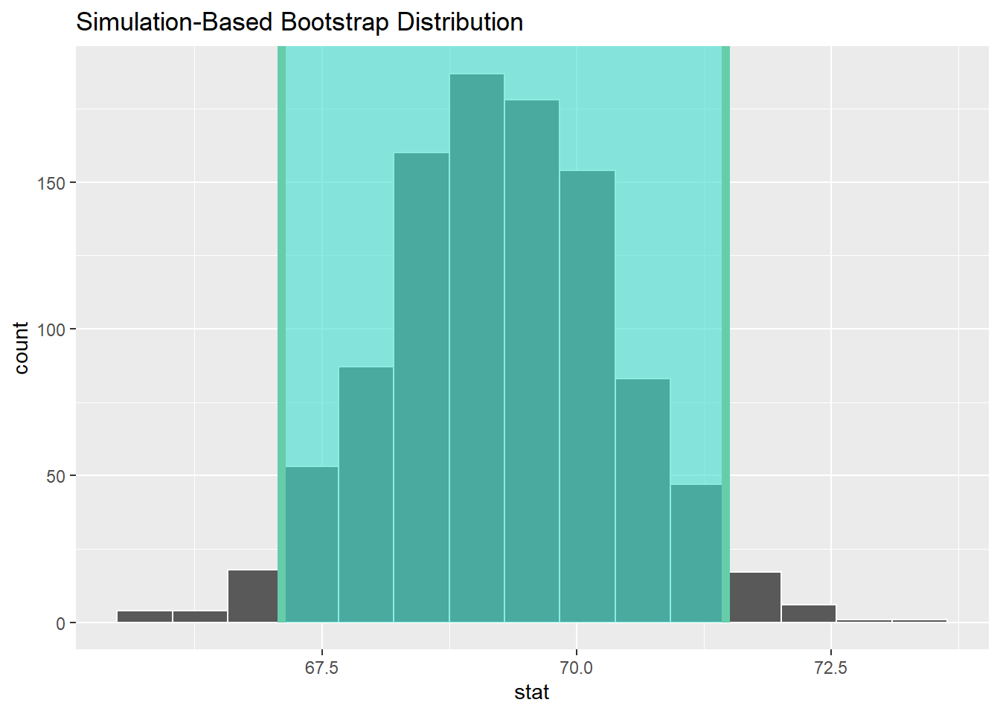

pacman::p_load(tidyverse, infer)Randomisation Inference Statistics: infer methods
Overview
In ISSS602 Data Analytics Lab, we shared with you a collection of conventional inference statistical methods such as two-sample mean test, ANOVA test and Chi-square test, just to name a few of them. These methods are very popular and their use is widespread, but this does not mean they are always the best tool for doing confirmatory data analysis on business and market research data.
Figure below shows that there is indeed another alternative approach to perform confirmatory data analysis called randomisation inference (Enclosed with blue in the flow diagram).
Note: The subsequent explanation draw extensively from A blog by Allen Downey entitle There is still only one test
Different from conventional inference statistical test whereby given a dataset, we will compute a test statistic that measures the size of the apparent effect. For example, if we are describing a difference between two groups, the test statistic might be the absolute difference in means.
We will then formulate a null hypothesis, which is a model of the world under the assumption that the effect is not real; for example, if we think there might be a difference between two groups, the null hypothesis would assume that there is no difference.
Next, we will compute a p-value, which is the probability of seeing an effect as big asùõøunder the null hypothesis.
On the other hand, if randomisation inference test approach is used, we will estimate the p-value by using our model of the null hypothesis to generate many simulated datasets. For each simulated dataset, we will compute the same test statistic we used on the actual data. Finally, we will count the fraction of times the test statistic from simulated data exceedsùõø. This fraction approximates the p-value. If it‚Äôs sufficiently small, we can conclude that the apparent effect is unlikely to be due to chance.
For more detail discussion of randomisation inference statistics, please refer to Chapter 11-22 of Introduction to Modern Statistics or Chapter 2-4 of Introductory Statistic with Randomization and Simulation
Enter infer: A tidy inference statistics
In the nutshell, infer is an R package specially designed for data analyst to perform randomisation inference statistics by using an expressive statistical grammar that coheres with the tidyverse design framework.
Figure below shows the five main verbs of infer package. They are:
specify()allows us to specify the variable, or relationship between variables, that you’re interested in.hypothesize()allows us to declare the null hypothesis.generate()allows us to generate data reflecting the null hypothesis.calculate()allows us to calculate a distribution of statistics from the generated data to form the null distribution.visualise()allows us to visualize the distribution of the simulation-based inferential statistics or the theoretical distribution (or both!).

The Data
For the purpose of this hands-on, a data set called Exam_data.csv will be used
Figure below shows the content of the data. It consists of seven fields. They are:
| Field Name | Description | Data type |
|---|---|---|
| ID | Unique ID of student | String |
| CLASS | Class level | String |
| GENDER | Gender of the student (i.e. Female, Male) | String |
| RACE | Race of student (i.e. Chinese, Indian, Malay and others) | String |
| ENGLISH | English scores | Numeric |
| MATHS | Maths scores | Numeric |
| SCIENCE | Science scores | Numeric |
Installing and Loading Packages
In this hands-on exercise, three R packages will be used. They are:
- readr for importing the csv file.
- ggplot2 for visualising the data.
- infer for performing randomisation inference statistics.
However, instead of loading them one-by-one by using library(), p_load() of pacman package is used.
Also note that instead of loading readr and ggplot2, tidyverse is loaded. This is because tidyverse will load all the core tidyverse packages that include readr and ggplot2.
Importing data
In the code chunk below, read_csv() of readr is used to import Exam_data.csv into R environment and save it as a tibble data frame.
exam <- read_csv("data/Exam_data.csv")Rows: 322 Columns: 7
── Column specification ────────────────────────────────────────────────────────
Delimiter: ","
chr (4): ID, CLASS, GENDER, RACE
dbl (3): ENGLISH, MATHS, SCIENCE
ℹ Use `spec()` to retrieve the full column specification for this data.
ℹ Specify the column types or set `show_col_types = FALSE` to quiet this message.exam# A tibble: 322 × 7
ID CLASS GENDER RACE ENGLISH MATHS SCIENCE
<chr> <chr> <chr> <chr> <dbl> <dbl> <dbl>
1 Student321 3I Male Malay 21 9 15
2 Student305 3I Female Malay 24 22 16
3 Student289 3H Male Chinese 26 16 16
4 Student227 3F Male Chinese 27 77 31
5 Student318 3I Male Malay 27 11 25
6 Student306 3I Female Malay 31 16 16
7 Student313 3I Male Chinese 31 21 25
8 Student316 3I Male Malay 31 18 27
9 Student312 3I Male Malay 33 19 15
10 Student297 3H Male Indian 34 49 37
# … with 312 more rowsEDA
In the code chunk below, ggplot2 is used to plot a boxplot with the mean values of both female and male students on their respective boxplots.
ggplot(data=exam,
aes(y = MATHS, x= GENDER)) +
geom_boxplot() +
stat_summary(geom = "point",
fun.y="mean",
colour ="red",
size=4) +
labs(y = "Maths scores")Warning: The `fun.y` argument of `stat_summary()` is deprecated as of ggplot2 3.3.0.
ℹ Please use the `fun` argument instead.The boxplot reveals that the mean Maths score of female students is slightly higer than the male students.
Summary statistics
To verify our observation, the code chunk below is used to derive the summary statistics of maths score by gender.
exam %>%
group_by(GENDER) %>%
summarize(n = n(),
mean_score = mean(MATHS),
std_dev = sd(MATHS))# A tibble: 2 × 4
GENDER n mean_score std_dev
<chr> <int> <dbl> <dbl>
1 Female 170 70.0 18.7
2 Male 152 68.6 21.4Thing to learn from the code chunk above:
group_by()andsummarize()of dplyr package is used to derive the summary statistics. This is why it is always useful to load the core packages of tidyverse because we can use them anytime we need them.
Two-sample Mean Test with Randomisation Inference Statistics: infer method
With reference to the EDA and summary statistics analysis, the following hypothesis are formulated.
H0: There is no difference between the mean maths score of female and male students
H1: The mean maths scores of female and male students are different.
For the purpose of this student, 95% confident interval will be used.
specify variables
In the code chunk below, specify() of infer package is used to define the formula and response and explanatory variables.
exam %>%
specify(formula = MATHS ~ GENDER)Response: MATHS (numeric)
Explanatory: GENDER (factor)
# A tibble: 322 × 2
MATHS GENDER
<dbl> <fct>
1 9 Male
2 22 Female
3 16 Male
4 77 Male
5 11 Male
6 16 Female
7 21 Male
8 18 Male
9 19 Male
10 49 Male
# … with 312 more rowsThings to learn from the code chunk above:
- the input must be in tibble data frame format.
- the response variable is maths score.
- the explanatory variable is gender.
hypothesize the null
For the purpose of this case study, We set the null hypothesis \(H0: \hatμ_f−\hatμ_m = 0\) by using the hypothesize() infer package. Since we have two samples, female and male students, we set null to be "independence" as we described in Section 9.3.
exam %>%
specify(formula = MATHS ~ GENDER) %>%
hypothesize(null = "independence")Response: MATHS (numeric)
Explanatory: GENDER (factor)
Null Hypothesis: independence
# A tibble: 322 × 2
MATHS GENDER
<dbl> <fct>
1 9 Male
2 22 Female
3 16 Male
4 77 Male
5 11 Male
6 16 Female
7 21 Male
8 18 Male
9 19 Male
10 49 Male
# … with 312 more rowsThings to learn from the code chunk above:
- We set this null hypothesis H0 in our infer workflow using the null argument of the
hypothesize()function independence for hypotheses involving two samples. If the hypotheses involving a single sample, then point should be used. - The data has not changed yet. This will occur at the upcoming
generate()step; we’re merely setting meta-data for now.
generate replicates
After we hypothesize() the null hypothesis, we generate() replicates of “shuffled” datasets assuming the null hypothesis is true. We do this by repeating the shuffling exercise several times. The type argument determines the method used to create the null distribution. They are three types of rendomisation/permutation methods available. They are:
bootstrap: A bootstrap sample will be drawn for each replicate, where a sample of size equal to the input sample size is drawn (with replacement) from the input sample data.permute: For each replicate, each input value will be randomly reassigned (without replacement) to a new output value in the sample.draw: A value will be sampled from a theoretical distribution with parameter p specified inhypothesize()for each replicate. This option is currently only applicable for testing on one proportion. This generation type was previously calledsimulate, which has been superseded.
In the code chunk below, we replicates the data 1000 times by using permute method.
set.seed(1234)
exam_permute <- exam %>%
specify(formula = MATHS ~ GENDER) %>%
hypothesize(null = "independence") %>%
generate(reps = 1000, type = "permute")
exam_permuteResponse: MATHS (numeric)
Explanatory: GENDER (factor)
Null Hypothesis: independence
# A tibble: 322,000 × 3
# Groups: replicate [1,000]
MATHS GENDER replicate
<dbl> <fct> <int>
1 97 Male 1
2 64 Female 1
3 66 Male 1
4 63 Male 1
5 58 Male 1
6 74 Female 1
7 68 Male 1
8 88 Male 1
9 47 Male 1
10 87 Male 1
# … with 321,990 more rowsThing to learn from the code chunk above.
set.seed()is used to ensure that the ramdomisation is reproducible.
Note that the resulting data frame has 322,000 rows. This is because we performed permutations for each of the 322 rows 1000 times and 322,000 = 322 x 1000. If you explore the exam_permute data frame with View(), you’ll notice that the variable replicate indicates which resample each row belongs to. So it has the value 1 322 times, the value 2 322 times, all the way through to the value 1000 322 times.
calculate summary statistics
Now, we are going to calculate the appropriate summary statistic for each of our 1000 shuffles by using calculate() of infer package. stat argument of calculate() will be used to specify the summary statistic used.
In the code chunk below, “diff in means” is used.
set.seed(1234)
null_distribution_maths <- exam %>%
specify(formula = MATHS ~ GENDER) %>%
hypothesize(null = "independence") %>%
generate(reps = 1000, type = "permute") %>%
calculate(stat = "diff in means",
order = c("Female", "Male"))
null_distribution_mathsResponse: MATHS (numeric)
Explanatory: GENDER (factor)
Null Hypothesis: independence
# A tibble: 1,000 × 2
replicate stat
<int> <dbl>
1 1 -6.12
2 2 3.12
3 3 -4.13
4 4 -6.67
5 5 1.46
6 6 -1.35
7 7 0.467
8 8 1.64
9 9 -1.99
10 10 1.64
# … with 990 more rowsNote that we have 1000 values of stat, each representing one instance of \(H0: \hatμ_f−\hatμ_m = 0\) in a hypothesized world of no gender difference in maths scores. Observe as well that we chose the name of this data frame carefully: null_distribution.
What was the observed difference in promotion rates? In other words, what was the observed test statistic \(H0: \hatμ_f−\hatμ_m = 0\). In the code chunk below, we compute this value using the previous infer code but with the hypothesize() and generate() steps removed.
obs_diff_means <- exam %>%
specify(formula = MATHS ~ GENDER) %>%
calculate(stat = "diff in means",
order = c("Female", "Male"))
obs_diff_meansResponse: MATHS (numeric)
Explanatory: GENDER (factor)
# A tibble: 1 × 1
stat
<dbl>
1 1.40visualize the p-value
Finally, it comes the verdict or more popularly known as statistical conclusion. In this step, we want to measure how surprised we are by a promotion difference of 1.402012 in a hypothesized universe of there are not different between the maths scores of female and male students. If the observed difference of 1.402012 is highly unlikely, then we would be inclined to reject the validity of our hypothesized universe.
In the code chunk below,
visualise()is used to plot the null distribution of our 1000 values of ,shade_p_value()function withobs_statargument set to the observed test statistic value we saved in obs_diff_mean.
visualize(null_distribution_maths,
bins = 10) +
shade_p_value(obs_stat = obs_diff_means,
direction = "both")
With reference to the figure above, the solid dark red line marks 1.402012. However, what does the shaded-region correspond to? This is the p-value. Recall the definition of the p
p-value is the probability of obtaining a test statistic just as or more extreme than the observed test statistic assuming the null hypothesis H0 is true.
So judging by the shaded region in the figure above, it seems that the p-value is larger than the 0.05 critical values. Hence, we failed to reject this hypothesized universe, or using statistical language we “do not have sufficient statistical evident to reject the null hypothesis”.
Oftentimes, we would like to find out what fraction of the null distribution is shaded? In other words, what is the exact value of the p-value? In the code chunk below, get_p_value() function with the same arguments as the previous shade_p_value() is used to derive the answer for this question.
null_distribution_maths %>%
get_p_value(obs_stat = obs_diff_means,
direction = "both")# A tibble: 1 × 1
p_value
<dbl>
1 0.496Keeping the definition of a p-value in mind, the probability of observing a difference in mean maths score between female and male students as large as 1.402012 due to sampling variation alone in the null distribution is 0.59 = 59%. Since this p-value is larger than our pre-specified significance level α = 0.05, we failed to reject the null hypothesis \(H0: \hatμ_f−\hatμ_m = 0\). In other words, this p-value is not sufficiently small to reject our hypothesised universe of the mean maths scores of female and male students are the same. In conclusion, we do not have enough statistical evidence to change our mind in favor of the mean maths scores of female and male students are not the same.
Confident interval
In this section, you will learn how to use functions provide by infer package to perform confident interval
exam %>%
specify(response = MATHS) %>%
calculate(stat = "mean")Response: MATHS (numeric)
# A tibble: 1 × 1
stat
<dbl>
1 69.3specify variables
exam %>%
specify(response = MATHS)Response: MATHS (numeric)
# A tibble: 322 × 1
MATHS
<dbl>
1 9
2 22
3 16
4 77
5 11
6 16
7 21
8 18
9 19
10 49
# … with 312 more rowsexam %>%
specify(formula = MATHS ~ NULL)Response: MATHS (numeric)
# A tibble: 322 × 1
MATHS
<dbl>
1 9
2 22
3 16
4 77
5 11
6 16
7 21
8 18
9 19
10 49
# … with 312 more rowsgenerate replicates
exam %>%
specify(response = MATHS) %>%
generate(reps = 1000, type = "bootstrap")Response: MATHS (numeric)
# A tibble: 322,000 × 2
# Groups: replicate [1,000]
replicate MATHS
<int> <dbl>
1 1 66
2 1 63
3 1 88
4 1 79
5 1 85
6 1 85
7 1 77
8 1 85
9 1 69
10 1 85
# … with 321,990 more rowscalculate summary statistics
bootstrap_distribution <- exam %>%
specify(response = MATHS) %>%
generate(reps = 1000) %>%
calculate(stat = "mean")Setting `type = "bootstrap"` in `generate()`.bootstrap_distributionResponse: MATHS (numeric)
# A tibble: 1,000 × 2
replicate stat
<int> <dbl>
1 1 68.4
2 2 68.4
3 3 68.8
4 4 69.9
5 5 71.0
6 6 70.0
7 7 69.7
8 8 69.8
9 9 68.9
10 10 69.2
# … with 990 more rowsvisualize the results
visualize(bootstrap_distribution)percentile_ci <- bootstrap_distribution %>%
get_confidence_interval(level = 0.95, type = "percentile")
percentile_ci# A tibble: 1 × 2
lower_ci upper_ci
<dbl> <dbl>
1 67.1 71.5visualize(bootstrap_distribution) +
shade_confidence_interval(endpoints = percentile_ci)
standard_error_ci <- bootstrap_distribution %>%
get_confidence_interval(type = "se", point_estimate = x_bar)Reference
Randomisation Inferential Statistics
Introduction to Modern Statistics Chapter 11-22.
Introductory Statistic with Randomization and Simulation Chapter 2-4.
infer
rstudio::conf 2018 infer: a package for tidy statistical inference